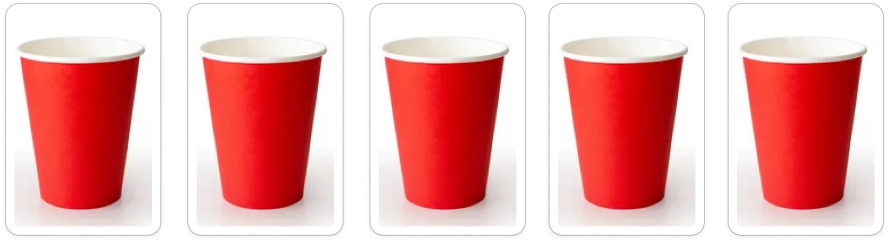
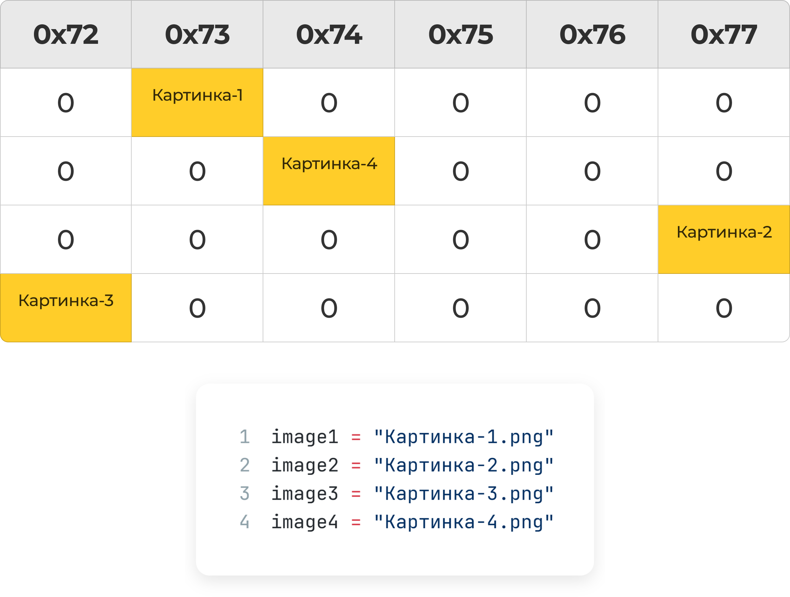
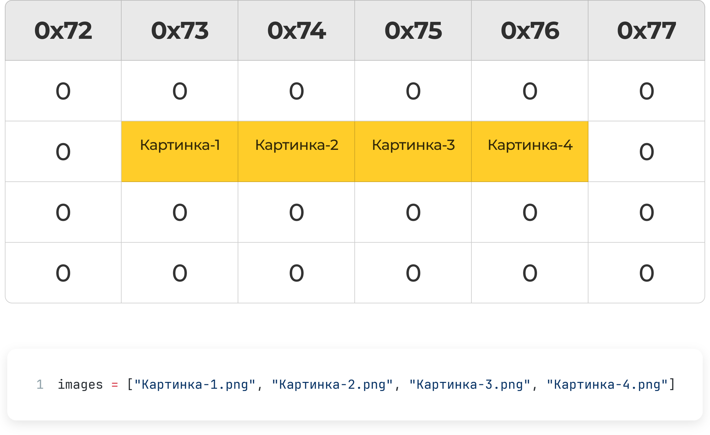
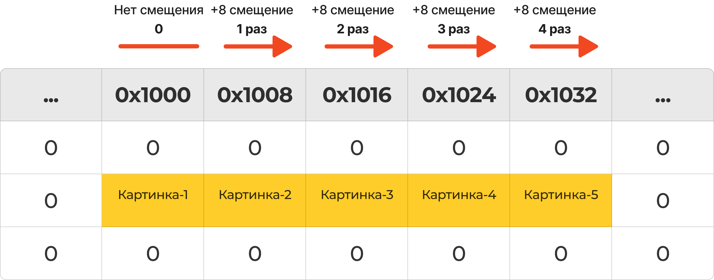

Коллекции
Зачем нужны коллекции
Напоминание
Переменная - это именованная область памяти, в которой находится нужное нам значение. По имени мы можем получить доступ к данным и изменять их.
До этого момента мы сохраняли одно значение в одной переменной. Например, название и путь к изображению на сервере.
Python - Одиночная переменная


image = "Картинка-1.png"С одной фотографией всё прекрасно, но… допустим, нужно сохранить и иметь доступ к 5000 фотографиям. Получается, нужно создать 5000 переменных? Придумать им имена? Как-то управлять ими и не допустить ошибок?
Python - Множество переменных
# Так делать крайне печально!!! :(
image1 = "Картинка-1.png"
image2 = "Картинка-2.png"
image3 = "Картинка-3.png"
image4 = "Картинка-4.png"
image5 = "Картинка-5.png"
image6 = "Картинка-6.png"
image7 = "Картинка-7.png"
image8 = "Картинка-8.png"
image9 = "Картинка-9.png"
image10 = "Картинка-10.png"
image11 = "Картинка-11.png"
image12 = "Картинка-12.png"
image13 = "Картинка-13.png"
image14 = "Картинка-14.png"
image15 = "Картинка-15.png"
image16 = "Картинка-16.png"
image17 = "Картинка-17.png"
# ...
image5000 = "Картинка-5000.png"
Это... боль 😵💫. Очевидно, что мы пошли не тем путём. Для решения таких задач в программировании придумали коллекции.
Виды коллекций в Python
В Python есть несколько встроенных видов коллекций. Основные из них:
Список (List): Упорядоченная, изменяемая коллекция. Элементы доступны по индексу.Кортеж (Tuple): Упорядоченная,неизменяемаяколлекция. Как список, который нельзя изменить после создания.Множество (Set): Неупорядоченная коллекцияуникальныхэлементов.Словарь (Dictionary): Неупорядоченная коллекция пар"ключ-значение".
В нашей ситуации, когда нужно хранить много однотипных элементов (пути к картинкам), лучше всего подходит Список.
Списки (List)
Список (List) - это коллекция элементов, которые хранятся в определённом порядке. Каждый элемент списка имеет свой номер — индекс (index).
Список можно представить себе в виде подноса со стаканами. Все стаканы пронумерованы, у каждого есть своё место на подносе!
Важно!
Индексы в списках (и в программировании в целом) начинаются с 0
Создание списка
Вместо создания 5000 переменных, создадим одну переменную menu, которая будет хранить целый список элементов. Список задается с помощью квадратных скобок [], а элементы внутри перечисляются через запятую.
Python - Создание списка
# Создание списка строк
images = ["Картинка-1.png", "Картинка-2.png", "Картинка-3.png"]
# Можно явно указать тип данных (хорошая практика)
numbers: list[int] = [1, 2, 3, 4, 5]
Доступ к элементам
Чтобы получить значение из списка, нужно обратиться к нему по имени и в квадратных скобках указать индекс нужного элемента.
Python - Доступ к элементам
print(images[0]) # Картинка-1.png
print(images[1]) # Картинка-2.png
print(images[2]) # Картинка-3.png
# Получить последний элемент
print(images[-1]) # Последний элемент: Картинка-3.png
Важно!
Индексы в списках начинаются с 0!
Это значит, что images[0] — первый элемент, images[1] — второй и так далее.
Создание пустого списка
Иногда нужно создать пустой список, чтобы потом заполнить его элементами. Это можно сделать двумя способами:
Python - Создание пустого списка
# Способ 1: Пустые квадратные скобки
player_inventory = []
# Способ 2: Встроенная функция list()
enemy_types = list()
Вывод списка
Чтобы увидеть весь список целиком, используем знакомую функцию print():
Python - Вывод списка
weapons = ["Меч", "Лук", "Посох"]
print(weapons) # ['Меч', 'Лук', 'Посох']
Встроенная функция list()
Функция list() не только создаёт пустые списки, но и может преобразовывать другие типы данных в списки. Это очень полезно!
Создание списка с помощью range()
Помните функцию range()? Она создаёт последовательность чисел, которую можно превратить в список:
Python - list() и range()
# Создаём список уровней от 1 до 5
levels = list(range(1, 6))
print(levels) # [1, 2, 3, 4, 5]
# Список чётных очков опыта
even_xp = list(range(0, 11, 2))
print(even_xp) # [0, 2, 4, 6, 8, 10]
# Список нечётных уровней
odd_levels = list(range(1, 10, 2))
print(odd_levels) # [1, 3, 5, 7, 9]
Преобразование строки в список
Строку тоже можно превратить в список символов! Это может пригодиться для анализа никнейма игрока:
Python - Строка в список
player_name = "Артур"
name_letters = list(player_name)
print(name_letters) # ['А', 'р', 'т', 'у', 'р']
# Можно проверить, сколько букв в имени
print(len(name_letters)) # 5
Списки в оперативной памяти
Когда мы создаём переменные, для них выделяются ячейки в оперативной памяти. Эти ячейки могут быть расположены в разных местах памяти, в зависимости от того, где есть свободное пространство.
Такой подход может затруднить доступ к этим переменным, поскольку при работе с ними система должна находить адрес каждой переменной отдельно. Этот процесс может требовать дополнительных ресурсов для поиска и обращения к памяти.
Когда мы создаём массив или список, операционная система обычно выделяет один непрерывный блок памяти для всех элементов. Это означает, что после первой ячейки для первого элемента все последующие элементы списка будут находиться последовательно в соседних ячейках памяти.
Такое размещение упрощает и ускоряет доступ к элементам, так как достаточно знать адрес первого элемента и шаг перехода к следующему элементу, чтобы обращаться к любому элементу списка напрямую.
Примечание
Существует множество структур данных, и рассмотренный выше пример актуален для простых массивов. Он показан для демонстрации и понимания основ работы с памятью. Например, такие структуры данных, как связанные списки и динамические списки, работают с памятью немного сложнее.
Операции CRUD со списками
CRUD — это акроним для четырёх основных операций над данными:
Create (Создание)Read (Чтение)Update (Обновление)Delete (Удаление)
Списки в Python являются изменяемыми (mutable), то есть мы можем добавлять, изменять и удалять элементы после создания списка.
Представим, что мы готовим салат на ужин. Наш список ингредиентов будет меняться по ходу дела.
C - Create (Создание/Добавление)
# Изначальный список
menu: list[str] = ["🥒","🥬","🥔"]
# Добавить элемент в конец списка с помощью метода .append()
menu.append("🍅")
print(menu) # ['🥒', '🥬', '🥔', '🍅']
R - Read (Чтение)
menu: list[str] = ["🥒","🥬","🥔","🍅"]
# Получить все элементы
print(menu) # ['🥒', '🥬', '🥔', '🍅']
# Получить первый элемент
print(menu[0]) # '🥒'
# Получить размер списка с помощью функции len()
print(len(menu)) # 4
# Получить последний элемент
# Способ 1: через len()
print(menu[len(menu) - 1]) # '🍅'
# Способ 2: "Питоновский" путь через отрицательный индекс
print(menu[-1]) # '🍅'
# Почему мы отнимаем 1 от len(menu)?
# ⚠️ Частая ошибка: list index out of range
# Размер списка = 4, но индексы от 0 до 3!
# print(menu[len(menu)]) # ❌ Ошибка! Индекс 4 не существует
# print(menu[4]) # ❌ IndexError: list index out of range
U - Update (Обновление)
menu: list[str] = ["🥒","🥬","🥔","🍅"]
# Обновляем последний элемент по его индексу
menu[-1] = "🧅"
print(menu) # ['🥒', '🥬', '🥔', '🧅']
D - Delete (Удаление)
menu: list[str] = ["🥒","🥬","🥔","🧅"]
# Удалить элемент по индексу 2 (третий элемент) с помощью .pop()
menu.pop(2)
print(menu) # ['🥒', '🥬', '🧅']
# Удалить элемент по значению с помощью .remove()
menu.remove("🥒")
print(menu) # ['🥬', '🧅']
Перебор списка с помощью циклов
Перебор списка — это процесс последовательного доступа к каждому его элементу.
Цикл for-in (предпочтительный способ)
Этот цикл удобен, когда вам не нужны индексы, а нужно просто получить доступ к каждому элементу.
Python - Цикл for-in
shawarmas = [
"Шаурма Королевская",
"Шаурма Деревенская",
"Шаурма Гавайская",
]
print("Сегодня у нас в меню:")
for shawarma in shawarmas:
print(f'Блюдо: {shawarma}')
Цикл for с range()
Этот способ используется, когда вам нужен доступ не только к элементам, но и к их индексам.
Python - Цикл for с range()
print("Сегодня у нас в меню:")
for i in range(len(shawarmas)):
print(f"Блюдо №{i + 1} - {shawarmas[i]}")
Полезные методы ч1
Списки в Python обладают множеством встроенных функций, которые делают работу с ними удобной и эффективной. Давайте рассмотрим самые важные из них.
Оператор принадлежности in
Часто возникает задача проверить, есть ли определённый элемент в списке. Вместо того чтобы перебирать список в цикле, можно использовать элегантный оператор in. Он возвращает True, если элемент найден, и False — если нет.
Python - Проверка наличия элемента
player_inventory = ["Меч", "Щит", "Зелье здоровья", "Карта"]
# Проверяем, есть ли у игрока карта
if "Карта" in player_inventory:
print("Отлично, у вас есть карта! Можно исследовать подземелье.")
else:
print("Карты нет. Вы можете заблудиться.")
# Проверяем, нет ли у игрока бесполезного предмета
if "Старый ботинок" not in player_inventory:
print("Инвентарь в порядке, хлама нет.")
Конкатенация + и умножение *
Списки можно "складывать" (конкатенировать) и "умножать" на число, прямо как строки!
Python - Сложение и умножение списков
# Конкатенация: объединяем лут с двух монстров
orc_loot = ["Топор", "Золото"]
goblin_loot = ["Кинжал", "Золото", "Кольцо"]
total_loot = orc_loot + goblin_loot
print(f"Ваша добыча: {total_loot}")
# Ваша добыча: ['Топор', 'Золото', 'Кинжал', 'Золото', 'Кольцо']
# Умножение: создаём стартовый набор зелий
starter_potions = ["Малое зелье здоровья"] * 3
print(f"Стартовый набор: {starter_potions}")
# Стартовый набор: ['Малое зелье здоровья', 'Малое зелье здоровья', 'Малое зелье здоровья']
Функции max() min() sum()
Python предоставляет несколько удобных встроенных функций для быстрой работы с числовыми списками
sum(list)— возвращает сумму всех элементов списка.min(list)— возвращает наименьший элемент в списке.max(list)— возвращает наибольший элемент в списке.
Внимание! Эти функции работают только со списками, содержащими совместимые типы данных (например, только числа). Попытка найти сумму в списке, где есть строки, приведёт к ошибке.
Python - Функции sum, min, max
# Список очков за раунды
round_scores = [1250, 900, 1800, 700, 1550]
# Считаем общую сумму очков за игру
total_score = sum(round_scores)
print(f"Всего очков за игру: {total_score}") # Всего очков за игру: 6200
# Находим лучший и худший раунд
best_round = max(round_scores)
worst_round = min(round_scores)
print(f"Лучший раунд: {best_round} очков") # Лучший раунд: 1800 очков
print(f"Худший раунд: {worst_round} очков") # Худший раунд: 700 очков
# min() и max() работают и со строками (в алфавитном порядке)
defeated_monsters = ["Гоблин", "Орк", "Скелет", "Архидемон"]
print(f"Первый монстр по алфавиту: {min(defeated_monsters)}") # Архидемон
print(f"Последний монстр по алфавиту: {max(defeated_monsters)}") # Скелет
Полезные методы ч2
Помимо уже рассмотренных, у списков есть и другие методы, которые часто пригождаются на практике.
Сортировка: sort() и функция sorted()
Для упорядочивания элементов списка есть два основных способа:
- Метод
.sort(): Сортирует список на месте (in-place), то есть изменяет сам исходный список. Ничего не возвращает (точнее, возвращаетNone). - Функция
sorted(list): Создаёт и возвращает новый, отсортированный список, оставляя исходный список без изменений.
Python - Сортировка списков
# Таблица лидеров (очки игроков)
leaderboard = [1200, 850, 1500, 950, 1500]
# Способ 1: .sort() для сортировки на месте
# Сортируем по убыванию, чтобы лучшие были наверху
leaderboard.sort(reverse=True)
print(f"Таблица лидеров: {leaderboard}") # Таблица лидеров: [1500, 1500, 1200, 950, 850]
# Способ 2: sorted() для создания новой копии
inventory = ["Зелье маны", "Меч", "Щит", "Амулет"]
sorted_inventory = sorted(inventory) # Сортировка по алфавиту
print(f"Инвентарь по алфавиту: {sorted_inventory}") # Инвентарь по алфавиту: ['Амулет', 'Зелье маны', 'Меч', 'Щит']
print(f"Исходный инвентарь: {inventory}") # Исходный инвентарь: ['Зелье маны', 'Меч', 'Щит', 'Амулет']
Разворот списка: reverse()
Метод .reverse() переворачивает порядок элементов в списке на месте. Как и .sort(), он ничего не возвращает.
Python - Разворот списка
# Игрок записал свой путь по комнатам подземелья
path_taken = ["Вход", "Зал с колоннами", "Оружейная", "Сокровищница"]
# Чтобы найти путь назад, нужно развернуть список
path_taken.reverse()
print(f"Путь назад: {path_taken}") # Путь назад: ['Сокровищница', 'Оружейная', 'Зал с колоннами', 'Вход']
Совет: Не путайте .reverse() с параметром reverse=True в методе .sort(). Первый просто меняет порядок на обратный, а второй сортирует по убыванию.
Подсчёт и удаление: count() и clear()
.count(x): Считает, сколько раз элементxвстречается в списке..clear(): Удаляет все элементы из списка, делая его пустым.
Python - Подсчёт и удаление
# Инвентарь после битвы с гоблинами
loot = ["Золото", "Кинжал", "Золото", "Кольцо", "Золото"]
# Считаем, сколько золота мы получили
gold_count = loot.count("Золото")
print(f"Найдено золота: {gold_count} шт.") # Найдено золота: 3 шт.
# Игрок продал все предметы торговцу
loot.clear()
print(f"Инвентарь после продажи: {loot}") # Инвентарь после продажи: []
Копирование: copy()
Это один из самых важных методов! При простом присваивании (new_list = old_list) вы не создаёте новый список, а лишь даёте старом списку новое имя. Изменения в одном "списке" отразятся и в другом, потому что это один и тот же объект в памяти. Метод .copy() создаёт поверхностную копию, решая эту проблему.
Python - Копирование списка
# Неправильное копирование: симуляция боя
player_health_bar = ["💚", "💚", "💚", "💚", "💚"]
monster_attack = player_health_bar # Это не копия!
monster_attack.pop() # Монстр наносит урон
print(f"Здоровье после атаки: {monster_attack}") # Здоровье после атаки: ['💚', '💚', '💚', '💚']
print(f"Оригинал ИЗМЕНИЛСЯ!: {player_health_bar}") # Оригинал ИЗМЕНИЛСЯ!: ['💚', '💚', '💚', '💚']
print("-" * 20)
# Правильное копирование: создаем временную копию для расчета урона
player_health_bar = ["💚", "💚", "💚", "💚", "💚"]
simulation = player_health_bar.copy() # Создаем настоящую копию
simulation.pop()
print(f"Здоровье в симуляции: {simulation}") # Здоровье в симуляции: ['💚', '💚', '💚', '💚']
print(f"Оригинал не изменился: {player_health_bar}") # Оригинал не изменился: ['💚', '💚', '💚', '💚', '💚']
Срезы (Slices): Получение частей списка
Представьте, что у вас есть длинный список, а вам нужна только его часть: первые три элемента, элементы с пятого по десятый или каждый второй элемент. Для таких задач существуют срезы — мощный и лаконичный инструмент.
Синтаксис среза выглядит так: my_list[start:stop:step].
start— индекс, с которого начинается срез (включительно). Если опущен, срез начинается с начала списка.stop— индекс, на котором срез заканчивается (не включительно!). Если опущен, срез идёт до конца списка.step— шаг, с которым выбираются элементы. Если опущен, шаг равен 1.
Python - Примеры срезов
numbers = [0, 1, 2, 3, 4, 5, 6, 7, 8, 9]
# Получить первые 3 элемента
first_three = numbers[0:3] # или просто numbers[:3]
print(f"Первые три: {first_three}") # [0, 1, 2]
# Элементы с индекса 2 по 5 (не включая 5)
middle_part = numbers[2:5]
print(f"Часть из середины: {middle_part}") # [2, 3, 4]
# Все элементы с индекса 6 и до конца
from_six_to_end = numbers[6:]
print(f"С 6-го до конца: {from_six_to_end}") # [6, 7, 8, 9]
# Получить каждый второй элемент
every_second = numbers[::2]
print(f"Каждый второй: {every_second}") # [0, 2, 4, 6, 8]
# Развернуть список с помощью среза!
reversed_list = numbers[::-1]
print(f"Развёрнутый список: {reversed_list}") # [9, 8, 7, 6, 5, 4, 3, 2, 1, 0]
Важно!
Срез всегда создаёт новый список (поверхностную копию). Изменение среза не повлияет на исходный список, и наоборот.
Списочные выражения (List Comprehensions)
Списочные выражения — Ещё одна фишка в Python. Они позволяют создавать списки на основе других последовательностей (например, других списков или range) в одну строку, делая код короче и часто понятнее.
Представьте, что нам нужно создать список квадратов чисел от 0 до 9. Обычный способ выглядит так:
# Обычный способ
squares = []
for i in range(10):
squares.append(i * i)
print(squares) # [0, 1, 4, 9, 16, 25, 36, 49, 64, 81]
А теперь посмотрим, как это делается с помощью списочного выражения:
# Способ с List Comprehension
squares = [i * i for i in range(10)]
print(squares) # [0, 1, 4, 9, 16, 25, 36, 49, 64, 81]
Магия, не правда ли? Структура такая: [выражение for элемент in последовательность].
Добавляем условие
В списочные выражения можно добавлять и условия if, чтобы включать в новый список только нужные элементы.
Python - List Comprehension с условием
# Создать список только чётных чисел от 0 до 9
even_numbers = [i for i in range(10) if i % 2 == 0]
print(even_numbers) # [0, 2, 4, 6, 8]
# Создать список имён, которые начинаются на "А"
names = ["Анна", "Борис", "Алиса", "Виктор"]
a_names = [name for name in names if name.startswith("А")]
print(a_names) # ['Анна', 'Алиса']
На заметку
Списочные выражения — это мощный инструмент, но не стоит им злоупотреблять. Если логика становится слишком сложной (например, с вложенными циклами и множеством условий), лучше использовать обычный цикл for, чтобы не жертвовать читаемостью кода.
Методы split и join
Очень часто приходится преобразовывать строку в список или наоборот собирать из элементов списка строку. Для этого есть два незаменимых метода.
Метод строки .split()
Этот метод "разрезает" строку на части по указанному разделителю и возвращает список этих частей. Если разделитель не указать, split будет делить строку по любым пробельным символам (пробелы, табы, новые строки).
Python - Метод split
# Пример 1: Обработка команды игрока
player_command = "атаковать гоблина мечом"
command_parts = player_command.split() # Разделитель не указан (пробел)
print(f"Команда: {command_parts}") # Команда: ['атаковать', 'гоблина', 'мечом']
# Теперь можно легко получить действие, цель и оружие.
# Пример 2: Загрузка характеристик врага из строки
enemy_data_string = "Скелет-воин,50,15,меч"
enemy_stats = enemy_data_string.split(',')
print(f"Характеристики врага: {enemy_stats}") # Характеристики врага: ['Скелет-воин', '50', '15', 'меч']
Метод строки .join()
Этот метод делает обратную операцию: он "склеивает" элементы списка в одну строку, вставляя между ними ту строку, у которой был вызван метод.
Python - Метод join
words_list = ["Как", "сделать", "из", "массива", "строку"]
# Соединяем слова через пробел
sentence = ' '.join(words_list)
print(sentence) # "Как сделать из массива строку"
# Создаём URL-адрес
path_parts = ['Диск D', 'Секретные файлы', 'Genshin Фанфик.doc']
full_path = '/'.join(path_parts)
print(full_path) # "Диск D/Секретные файлы/Genshin Фанфик.doc"
Важно! Метод .join() работает только со списком, содержащим строки. Если в списке будут числа или другие типы, вы получите ошибку.
Почему индексация с нуля?
Каждая ячейка памяти имеет свой уникальный адрес — это просто число, которое указывает на местоположение конкретного элемента. Например, если у нас есть массив чисел, каждый элемент массива занимает определённое количество памяти (в зависимости от типа данных, например, int8 занимает 1 байт, int64 — 8 байт).
Представьте массив из 5 значений:
Массив в памяти
[ Картинка1, Картинка2, Картинка3, Картинка4, Картинка5 ]Допустим, первый элемент массива находится по адресу 1000.
Этот элемент занимает 1 байт или 8 бит
Следующий элемент будет находиться по адресу 1000 + 8
Следующий по адресу 1000 + 8 + 8
Следующий по адресу 1000 + 8 + 8 + 8
И далее до 5-ого элемента
Адреса элементов в памяти
1000 + 0
1000 + 8
1000 + 8 + 8
1000 + 8 + 8 + 8
1000 + 8 + 8 + 8 + 8Почему индекс начинается с 0
Когда мы обращаемся к первому элементу, фактически мы берём начальный адрес памяти 1000 и не добавляем никакого смещения, так как это первый элемент.
Это называется нулевым смещением, поэтому индекс этого элемента - 0
Для второго элемента добавляем 1 байт, для третьего — 2 байта, и так далее.
Поэтому индексы массива и начинаются с 0:
- первый элемент — смещение 0,
- второй элемент — смещение 1,
- третий элемент — смещение 2,
- и так далее...
Генератор рекламных слоганов
Python - Генератор слоганов
import random
words1 = ["Неразлучные","Вечнозелёные","Ленивые","Сытные","Шустрые"]
words2 = ["Огурцы","Бублики","Идеи","Пингвины", "Балалайки"]
words3 = ["Объединяют","Удивляют","Спасают","Украшают","Вдохновляют"]
# random.choice() выбирает случайный элемент из списка
word1 = random.choice(words1)
word2 = random.choice(words2)
word3 = random.choice(words3)
phrase = f"{word1} {word2} {word3}"
print(phrase)